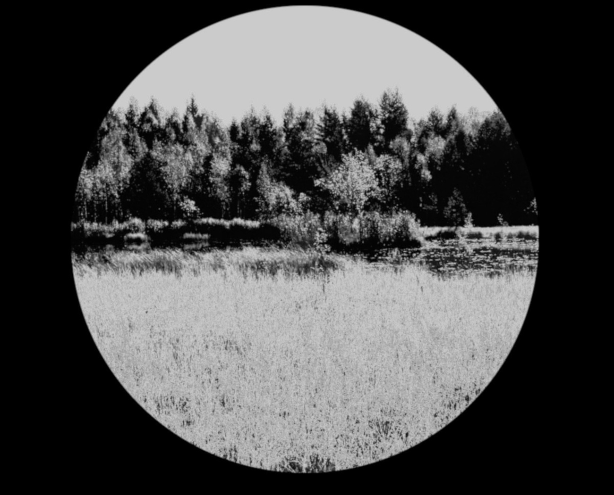
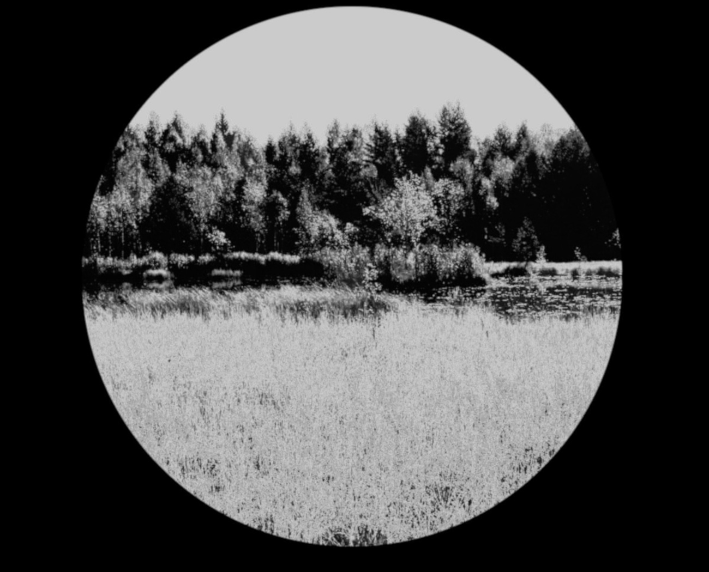

@aik
Калинин Александр
Добрый день, дорогие друзья! Этот блог целиком состоит из фотографий, которые были сделаны с помощью компактных роботов и необычных творческих алгоритмов. Роботы снабжены дополнительным оборудованием: видеокамерами, микроскопами, телескопами и датчиками. Специальный алгоритм выбирает только нужные фотографии и автоматически формирует простой блог. Приятного просмотра!


 



Об авторе...
Моё имя Калинин Александр. В настоящий момент работаю руководителем группы в Mail.RU. До этого много лет работал в других известных корпорациях (включая пять лет в государственных средствах массовой информации и два года в М.Видео). На протяжении десяти лет являюсь техническим инструктором нескольких известных журналистов, блогеров и спортсменов. Высшее образование по специальности «информационные технологии в экономике».
Основные профессиональные направления: творческие алгоритмы (боты, виртуальные персонажи, системы рекомендаций, поисковые технологии, необычные интернет-магазины, конструкторы сайтов).
Дополнительные профессиональные направления: роботы с различным встроенным оборудованием (микроскопы, телескопы, видеокамеры, компасы, навигаторы, датчики, гидравлика, лебёдки, насосы, домкраты).
Технологии: Python (PostgreSQL, Elasticsearch, Redis, Kafka, MinIO, KrakenD, Django), PHP (MySQL, RabbitMQ, Laravel, Yii), Python (NumPy, Pandas, Matplotlib, Seaborn, Scikit-learn, CatBoost), Go и JavaScript.
Публикации и примеры кода: Хабр, Coderwall, @aik, Datasets.
Несколько важных пояснений: я не являюсь фотографом или журналистом, а занимаюсь исключительно программным обеспечением и оборудованием. В кадре я не работаю. Все фотографии сделаны с соблюдением техники безопасности и с учётом действующего законодательства.
Система ценностей: для меня в приоритете рациональное мышление и осознанность. Это касается как профессионального развития, так и личных качеств. Убеждён, что любому современному человеку важны следующие проявления осознанности: профессиональное развитие, здоровый образ жизни, честные преданные отношения, финансовая грамотность, юридические знания, ответственное обращение с природой (включая разумную охоту без потребительского отношения), а также аккуратное управление транспортным средством.
Увлечения: умею вкусно готовить, хорошо вожу машину (стаж с 2004 года), разбираюсь в методах выживания в дикой природе и в охоте (есть лицензия и разрешающие документы), знаю приёмы рукопашного боя.
Контакты: электронная почта и страница на vk.com
© Калинин Александр